setwd("~/OtherAnalysis/2015_07_03_mRNAvsProtein/DraftMapOfHumanProteome/") (load("2_mats.RData"))
## [1] "mats" "tissues" "proteins"
(names(mats) <- gsub("LOO", "zLOO", gsub("NI", "zNI", gsub("TFs", "zTFs", names(mats)))))
## [1] "mRNAs" "prots" "ratio" "ratio_zLOO" ## [5] "lm_zNI" "lm" "lm_zTFs" "elastic_zTFs" ## [9] "elastic_zTFs_zNI" "interceptOnly"
lapply(mats, str)
## num [1:1392, 1:12] 3.44e-05 1.42e-05 1.92e-05 3.64e-05 3.89e-05 ... ## - attr(*, "dimnames")=List of 2 ## ..$ : chr [1:1392] "ENSG00000000419" "ENSG00000000971" "ENSG00000001084" "ENSG00000002549" ... ## ..$ : chr [1:12] "uterus" "kidney" "testis" "pancreas" ... ## num [1:1392, 1:12] 9.97e-06 3.63e-05 1.69e-05 6.75e-05 5.55e-05 ... ## - attr(*, "dimnames")=List of 2 ## ..$ : chr [1:1392] "ENSG00000000419" "ENSG00000000971" "ENSG00000001084" "ENSG00000002549" ... ## ..$ : chr [1:12] "uterus" "kidney" "testis" "pancreas" ... ## num [1:1392, 1:12] 1.60e-05 1.11e-04 3.53e-05 2.26e-04 3.02e-04 ... ## num [1:1392, 1:12] 1.90e-05 1.13e-04 3.95e-05 2.43e-04 3.06e-04 ... ## num [1:1392, 1:12] 1.91e-05 8.71e-05 4.67e-05 3.10e-04 3.06e-04 ... ## num [1:1392, 1:12] 2.12e-05 1.70e-04 4.40e-05 2.49e-04 3.20e-04 ... ## num [1:1392, 1:12] 3.64e-05 4.80e-05 2.62e-05 2.97e-04 4.46e-04 ... ## num [1:1392, 1:12] 3.26e-05 1.31e-04 2.92e-05 2.38e-04 4.35e-04 ... ## num [1:1392, 1:12] 7.45e-06 7.01e-05 2.90e-05 2.57e-04 1.00e-04 ... ## num [1:1392, 1:12] 2.11e-05 2.12e-04 4.69e-05 3.77e-04 3.02e-04 ...
## $mRNAs ## NULL ## ## $prots ## NULL ## ## $ratio ## NULL ## ## $ratio_zLOO ## NULL ## ## $lm_zNI ## NULL ## ## $lm ## NULL ## ## $lm_zTFs ## NULL ## ## $elastic_zTFs ## NULL ## ## $elastic_zTFs_zNI ## NULL ## ## $interceptOnly ## NULL
sapply(is.na(mats), sum)
## mRNAs prots ratio ratio_zLOO lm_zNI ## 0 0 0 0 0 ## lm lm_zTFs elastic_zTFs elastic_zTFs_zNI interceptOnly ## 0 0 0 0 0
sapply(mats, function(m) sum(m==0))
## mRNAs prots ratio ratio_zLOO lm_zNI ## 0 0 0 0 0 ## lm lm_zTFs elastic_zTFs elastic_zTFs_zNI interceptOnly ## 0 0 0 0 0
library(reshape) library(ggplot2) mses <- lapply(mats, function(m) return((m-mats$prot)**2)) # FUNCTION TO PLOT ONE PROTEIN plotProtein <- function(p, pred){ if(is.character(p)){p <- which(proteins == p)} pDat <- data.frame( tissue = tissues, mRNA=mats$mRNAs[p,tissues], protein=mats$prots[p,tissues]) for(x in pred){ pDat[,x] <- mats[[x]][p,] } plot <- ggplot(melt(pDat), aes(x=tissue, y=value, colour=variable, group=variable)) + geom_line() + theme_bw(24) + theme(axis.text.x = element_text(angle = 90, hjust = 1)) return(plot) } # COMPARISON BETWEEN METHODS ---------------------------------------------- str(mses2 <- do.call(rbind, lapply(mses, function(mat) apply(mat, 1, mean))))
## num [1:10, 1:1392] 5.29e-10 0.00 2.61e-10 3.52e-10 3.04e-10 ... ## - attr(*, "dimnames")=List of 2 ## ..$ : chr [1:10] "mRNAs" "prots" "ratio" "ratio_zLOO" ... ## ..$ : chr [1:1392] "ENSG00000000419" "ENSG00000000971" "ENSG00000001084" "ENSG00000002549" ...
str(mses2 <- data.frame(t(mses2)))
## 'data.frame': 1392 obs. of 10 variables: ## $ mRNAs : num 5.29e-10 4.43e-08 1.86e-09 2.16e-07 8.53e-08 ... ## $ prots : num 0 0 0 0 0 0 0 0 0 0 ... ## $ ratio : num 2.61e-10 2.02e-08 1.11e-09 9.43e-08 2.29e-08 ... ## $ ratio_zLOO : num 3.52e-10 2.12e-08 1.42e-09 1.05e-07 2.38e-08 ... ## $ lm_zNI : num 3.04e-10 2.13e-08 1.29e-09 1.20e-07 2.66e-08 ... ## $ lm : num 3.06e-10 3.26e-08 1.35e-09 1.49e-07 2.60e-08 ... ## $ lm_zTFs : num 9.77e-10 5.67e-08 1.62e-09 2.09e-07 3.91e-08 ... ## $ elastic_zTFs : num 4.11e-10 4.71e-08 1.51e-09 1.99e-07 3.50e-08 ... ## $ elastic_zTFs_zNI: num 3.78e-10 3.78e-08 1.98e-09 1.83e-07 6.86e-08 ... ## $ interceptOnly : num 2.48e-10 2.06e-08 1.99e-09 1.57e-07 3.27e-08 ...
cor(mses2, method="spearman")
## Warning in cor(mses2, method = "spearman"): the standard deviation is zero
## mRNAs prots ratio ratio_zLOO lm_zNI lm lm_zTFs ## mRNAs 1.0000000 NA 0.9415639 0.9397883 0.9409172 0.9374578 0.9218910 ## prots NA 1 NA NA NA NA NA ## ratio 0.9415639 NA 1.0000000 0.9983576 0.9966591 0.9869557 0.9729319 ## ratio_zLOO 0.9397883 NA 0.9983576 1.0000000 0.9950770 0.9853467 0.9718978 ## lm_zNI 0.9409172 NA 0.9966591 0.9950770 1.0000000 0.9924133 0.9778762 ## lm 0.9374578 NA 0.9869557 0.9853467 0.9924133 1.0000000 0.9810474 ## lm_zTFs 0.9218910 NA 0.9729319 0.9718978 0.9778762 0.9810474 1.0000000 ## elastic_zTFs 0.9298675 NA 0.9801159 0.9794400 0.9844545 0.9895619 0.9922312 ## elastic_zTFs_zNI 0.9412920 NA 0.9813487 0.9808734 0.9846109 0.9854583 0.9718362 ## interceptOnly 0.9407066 NA 0.9817880 0.9806193 0.9835140 0.9872684 0.9684673 ## elastic_zTFs elastic_zTFs_zNI interceptOnly ## mRNAs 0.9298675 0.9412920 0.9407066 ## prots NA NA NA ## ratio 0.9801159 0.9813487 0.9817880 ## ratio_zLOO 0.9794400 0.9808734 0.9806193 ## lm_zNI 0.9844545 0.9846109 0.9835140 ## lm 0.9895619 0.9854583 0.9872684 ## lm_zTFs 0.9922312 0.9718362 0.9684673 ## elastic_zTFs 1.0000000 0.9814005 0.9811444 ## elastic_zTFs_zNI 0.9814005 1.0000000 0.9904942 ## interceptOnly 0.9811444 0.9904942 1.0000000
# Linear model without intercept is pretty much like ratio!! str(dif <- mses2$lm_zNI - mses2$ratio_zLOO)
## num [1:1392] -4.81e-11 3.41e-11 -1.34e-10 1.53e-08 2.82e-09 ...
plotProtein(which(dif == tail(sort(dif), n = 1))[1], c("lm_zNI", "ratio_zLOO")) + scale_y_log10()
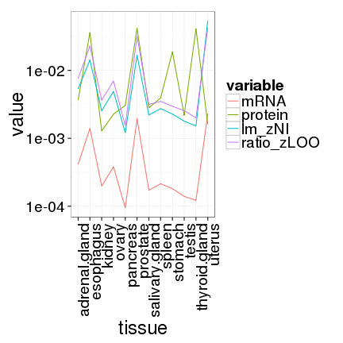
plotProtein(which(dif == head(sort(dif), n = 1))[1], c("lm_zNI", "ratio_zLOO")) + scale_y_log10()
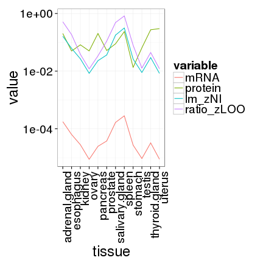
# Linear model is different from ratio but mostly because of the intercept!! str(dif <- mses2$lm - mses2$ratio_zLOO)
## num [1:1392] -4.63e-11 1.14e-08 -6.80e-11 4.46e-08 2.13e-09 ...
plotProtein(which(dif == tail(sort(dif), n = 1))[1], c("lm", "ratio_zLOO")) + scale_y_log10()
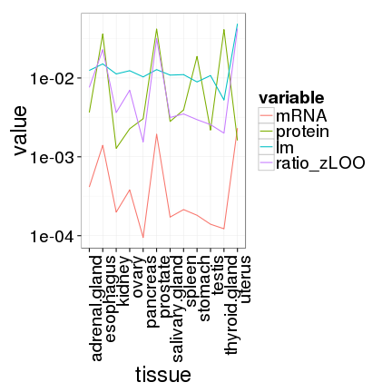
plotProtein(which(dif == head(sort(dif), n = 1))[1], c("lm", "ratio_zLOO")) + scale_y_log10()
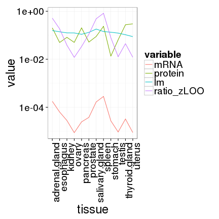
# same is true for the elastic net str(dif <- mses2$elastic_zTFs_zNI - mses2$ratio_zLOO)
## num [1:1392] 2.55e-11 1.66e-08 5.62e-10 7.89e-08 4.47e-08 ...
plotProtein(which(dif == tail(sort(dif), n = 1))[1], c("elastic_zTFs_zNI", "ratio_zLOO")) + scale_y_log10()
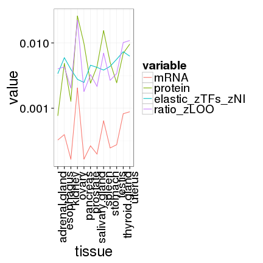
plotProtein(which(dif == head(sort(dif), n = 1))[1], c("elastic_zTFs_zNI", "ratio_zLOO")) + scale_y_log10()
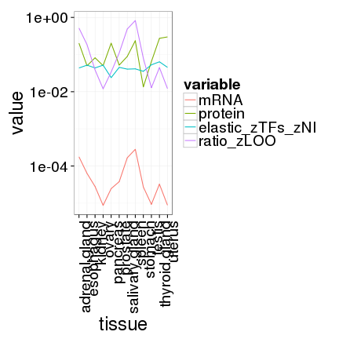
# SOME EXAMPLES? -------------------------------------------------------- # HIGH MSE in RATIO maxMSE <- apply(mses$ratio, 1, max) tail(sort(maxMSE))
## ENSG00000143546 ENSG00000135046 ENSG00000197249 ENSG00000244734 ENSG00000163220 ## 0.004311824 0.005039600 0.013633157 0.055682008 0.067461517 ## ENSG00000188536 ## 0.136403699
plotProtein(which(maxMSE %in% tail(sort(maxMSE), n=1)), c("lm", "ratio")) + scale_y_log10()
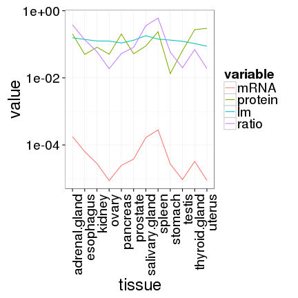
plotProtein(which(maxMSE %in% sort(maxMSE)[length(maxMSE)-1]), c("lm", "ratio")) + scale_y_log10()
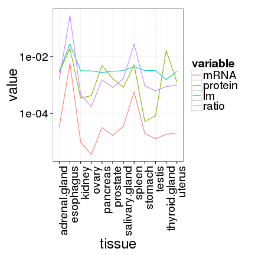
plotProtein(which(maxMSE %in% sort(maxMSE)[length(maxMSE)-2]), c("lm", "ratio")) + scale_y_log10()
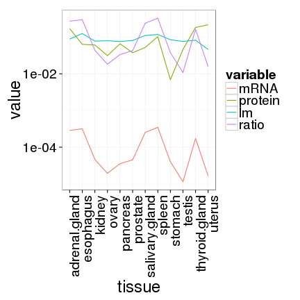
# HIGH MSE in LM maxMSE <- apply(mses$lm, 1, max) tail(sort(maxMSE))
## ENSG00000160213 ENSG00000143546 ENSG00000135046 ENSG00000149591 ENSG00000244734 ## 0.0006345375 0.0008597467 0.0009895582 0.0022166033 0.0291593481 ## ENSG00000188536 ## 0.0445602500
plotProtein(which(maxMSE %in% tail(sort(maxMSE), n=1)), c("lm", "ratio")) + scale_y_log10()
plotProtein(which(maxMSE %in% sort(maxMSE)[length(maxMSE)-1]), c("lm", "ratio")) + scale_y_log10()
plotProtein(which(maxMSE %in% sort(maxMSE)[length(maxMSE)-2]), c("lm", "ratio")) + scale_y_log10()

# HIGH MSE in LM without zNI maxMSE <- apply(mses$lm_zNI, 1, max) tail(sort(maxMSE))
## ENSG00000160213 ENSG00000163220 ENSG00000149591 ENSG00000135046 ENSG00000244734 ## 0.001684453 0.001849463 0.002719526 0.004279751 0.044264529 ## ENSG00000188536 ## 0.084235204
plotProtein(which(maxMSE %in% tail(sort(maxMSE), n=1)), c("lm", "ratio", "lm_zNI")) + scale_y_log10()
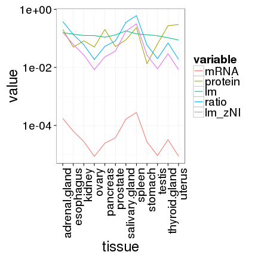
plotProtein(which(maxMSE %in% sort(maxMSE)[length(maxMSE)-1]), c("lm", "ratio", "lm_zNI")) + scale_y_log10()
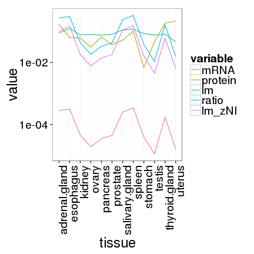
plotProtein(which(maxMSE %in% sort(maxMSE)[length(maxMSE)-2]), c("lm", "ratio", "lm_zNI")) + scale_y_log10()
## Warning in scale$trans$trans(x): NaNs produced

# HIGH MSE in elastic without zNI maxMSE <- apply(mses$elastic_zTFs_zNI, 1, max) tail(sort(maxMSE))
## ENSG00000143546 ENSG00000085662 ENSG00000111640 ENSG00000149591 ENSG00000244734 ## 0.0006162443 0.0006797408 0.0008667925 0.0008951082 0.0365444482 ## ENSG00000188536 ## 0.0641935715
plotProtein(which(maxMSE %in% tail(sort(maxMSE), n=1)), c("lm", "ratio", "elastic_zTFs_zNI")) + scale_y_log10()
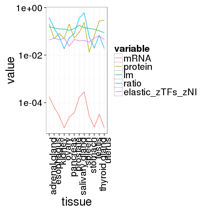
plotProtein(which(maxMSE %in% sort(maxMSE)[length(maxMSE)-1]), c("lm", "ratio", "elastic_zTFs_zNI")) + scale_y_log10()
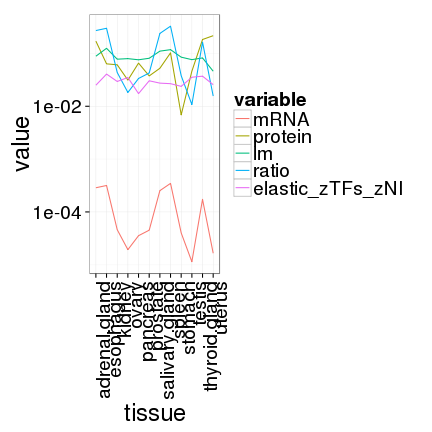
plotProtein(which(maxMSE %in% sort(maxMSE)[length(maxMSE)-2]), c("lm", "ratio", "elastic_zTFs_zNI")) + scale_y_log10()
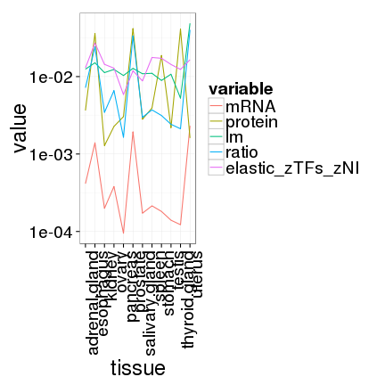